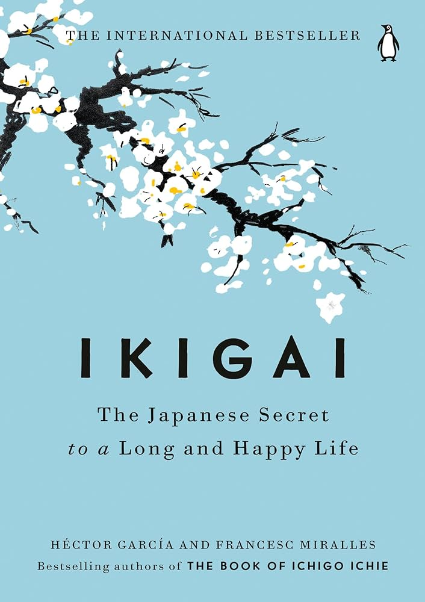

A trip with my family and friends to Coorg, India was the most memorable one. I had a great time tenting, with beautiful scenaries and delicious food
My favorite restaurant is ITC Kohenur because they have diverse menu with authentic and continental cuisines with cozy atmosphere and great ambience
| Book Name | Cover | Author | Summary |
|---|---|---|---|
| Paulo Coelho | "The Alchemist" narrates the tale of Santiago, a shepherd boy who sets out on a quest of self-discovery and personal development set in the mysterious environment of ancient Andalusia. | ||
| Ikigai |  | Hector Garcia and Francesc Miralles | "Ikigai" explores the Japanese concept of finding one's purpose in life by analyzing the habits and beliefs of the world's longest-living people. Through case studies, the book offers practical insights on how to live a more fulfilling life. |
| The Great Gatsby | |
F. Scott Fitzgerald | A story about the life and death of a charismatic millionaire who throws extravagant parties in the Roaring Twenties. |
| Dragonfly in Amber | |
Diana Gabaldon | Claire recounts the time she spent with Jamie Fraser, the Scottish Highlander she married and fell in love with, their intrigues in Paris and Prince Charles' inner circle during the Rising, and their struggle to alter the disastrous course of history in Scotland. |